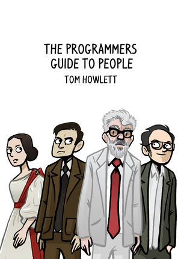

What Could You Do With 10 Years Of Continuous Improvement?
What Changed?
People Instinctively Feel Ineffectiveness
They Signal It With Frustration And Dispondency
Fear Is The Improvement Killer
People Signal It With Blame And Untrue Limiting Assumptions
Anti-Matter Principle
Attend to Folks' Needs
Bob Marshall (@flowchansensei)
Present a good team with problems & they'll thrive on finding solutions. Ask them to implement your solution & they'll only find problems.
Expose your dev team to the chaos of the outside world and ask them to find opportunities in the diversity
More?
